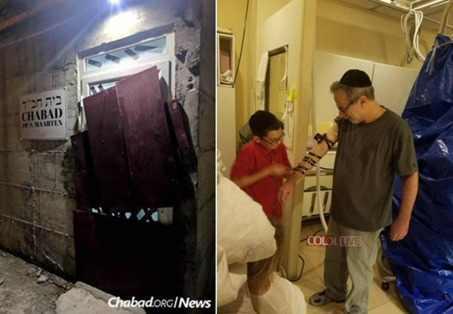

כנראה מגזימים
הוריקן ‘אירמה’ הוא השם שניתן לסופה טרופית רבת עצמה שהתפתחה מעל האוקיינוס האטלנטי בשבוע שעבר, והפכה להוריקן בקטגוריה 5, הקטגוריה הגבוהה ביותר. לקראת סוף השבוע, פגעה הסופה בשורה של איים באוקיינוס האטלנטי, עם רוחות במהירות 297 קמ”ש.
הוריקן ‘אירמה’ הוא השם שניתן לסופה טרופית רבת עצמה שהתפתחה מעל האוקיינוס האטלנטי בשבוע שעבר, והפכה להוריקן בקטגוריה 5, הקטגוריה הגבוהה ביותר. לקראת סוף השבוע, פגעה הסופה בשורה של איים באוקיינוס האטלנטי, עם רוחות במהירות 297 קמ”ש.

ביום חמישי החלו הרוחות העזות לנשוב בעוצמה רבה מאוד ובני המשפחה עברו במהירות לבית חב”ד שנמצא במיקום גבוה יותר.
פחד וחרדה בס. מרטין
על הרגעים הדרמטיים סיפר השליח בהקלטה ששיגר לידידיו השלוחים, תוך כדי הסערה:
“חברים יקרים, אני רוצה לשתף אתכם במה שקורה. אני לא יודע מתי תקבלו את ההודעה, כי התקשורת כאן ממש משובשת. האי נהרס לגמרי. זה לא יאומן. הכל נהרס. בנס, ניצלנו.
“ברגע האחרון החלטנו לעבור לבית חב”ד, שבנוי כמו בונקר. שמנו קרש עץ על דלת הזכוכית, אבל הייתה רוח במהירות של 185 מייל (כ-300 קמ”ש), הדלת פשוט נשברה, באמצע ההוריקן.
“בנס הצלחנו למלט את הילדים למבנה המקווה שנמצא מאחורי בית חב”ד, ובנוי ללא חלונות. את הדלת חסמנו באמצעות מקרר גדול. הרעש היה מאוד מפחיד.
“בסוף, כשהדברים נרגעו, יצאתי ומצאתי תמונה של הרבי שנפלה מהקיר ונשענה על הדלת. כל מה שהיה מעבר לתמונה - פשוט נהרס לגמרי. אני והמשפחה ניצלנו.
“כעת הבית כולו מוצף, אין חשמל ואומרים שיארכו כמה שבועות עד שיחזור החשמל…
“בבית חב”ד יש לנו חשמל מגנרטור קטן. זה כמו קעמפ, כולם מנסים לשרוד. מישהו עזר לנו להניח חתיכת ברזל כבדה על הדלת שלנו, כדי שהיא תישאר סגורה. זה לא כל כך בטוח, אבל זה גם משהו… יש כאן אנשים שהבתים שלהם נהרסו לגמרי. גגות עפו. יש לנו חבר שהרוח הרסה לו את כל הבית…”.
משפחת חסידי חב”ד בכל רחבי תבל, ששמעו על המצב הקשה, נחלצו לעזרה, ועשרות אלפים קיבלו את הבקשה הבאה:
“נא לומר תהילים לזכות השלוחים האלה, שמנסים לפנות אותם. אין שום דרך להגיע לתוך האי כפי שהוא, מאחר שרובו נחרב. יש להם מספיק חשמל לעוד 14 שעות. אין מים נקיים. אין שום מקום בשביל מסוקים או מטוסים לנחות ולא נשאר שם חוף ים יותר…”
חילוץ דרמטי במטוס
בעקבות המצב הקשה אליו נקלעה משפחת השלוחים, הקימו השלוחים באזור קבוצת וואצאפ ייחודית לנסות לסייע, יחד עם עסקנים חב”דיים מניו יורק ומארץ ישראל.
בשלב ראשון נעשו מאמצים עילאיים להשיג מטוס פרטי שיסכים לנחות באי ברוחות העזות. אחרי שעות של חיפושים הצליחו להשיג מטוס פרטי עם 8 מקומות ישיבה שהסכים לנחות באי בתוך הסערה ולחלץ את בני משפחת השליח. אולם המטוס לא קיבל אישור נחיתה משלטונות האי, וחזר כלעומת שבא.
העסקנים פנו לגורמים רבים בהם גם למשרד החוץ הישראלי על מנת שיסייע בחילוץ בני המשפחה שזעקו לעזרה, אולם גם השגריר הישראלי והנספח הצבאי הישראלי לא הצליחו להשיג אישור נחיתה למטוס החילוץ.
לאחר שעות רבות של פעילות בינלאומית, הצליחו ליצור קשר עם טייס שהביא ציוד הומניטרי לאיזור, שלאחר שיכנועים רבים הסכים לקחת את בני המשפחה. זה נחת באזור, וחילץ את משפחת השליח אל פורטו ריקו, שם התקבלו ע”י שליח הרבי הרב מענדל זרחי, ויהודי מקומי שסידרו להם בית ומקום חם לשהות בו.
במקביל לדרמה באיי ס. מרטין, נערכו השלוחים הבאים במסלולה המשוער של הסופה. שליח הרבי בוירג’ין איילנד, בחר אף הוא להשאר באי כדי לסייע לבני הקהילה, אולם בעת הסופה הסתתר במבנה בית רפואה מקומי, שנחשב למוגן יותר.
היעד הבא: מיאמי
מומחי מרכז ההוריקן הלאומי של ארה”ב, שעקבו כל העת אחרי נתיב הסופה, התריעו כי נתיב הסופה צועד היישר אל העיר מיאמי, ועין הסערה תכה בה מיד לאחר השבת.
נשיא ארה”ב ומושל פלורידה קראו למליוני תושבים שעל נתיבה המשוער של הסופה, להתפנות במהירות מבתיהם. המושל קרא לכולם להתפלל לה’ שימזער את נזקי הסופה.
בתי חב”ד בכל האזור נחלצו לעזרת המפונים, ובכלי התקשורת פורסם בהבלטה על בתי חב”ד באטלנטה, שהודיעו כי יארחו לשבת מאות יהודים שברחו מפלורידה.
שלוחי הרבי בקמפוסים בפלורידה גיבשו תוכנית פעולה מיוחדת לאירוח הסטודנטים בשבת זו, שכונתה בשם “שבת הוריקן”, ועודדו את הסטודנטים להתנדב לפעילות העניפה שתתקיים מיד בשוך הסערה.
מענה מדהים מהרבי
בתחילת השבוע, תוך כדי שההוריקן עושה את דרכו לעבר העיר מיאמי, שוחחנו עם שליח הרבי לקהילת דוברי עברית במיאמי, הרב מנחם חירותי, ושמענו ממנו על השבת בצל הסכנה.
תוך כדי שיחה ניתן לשמוע את קולות הרוח המכה בלוחות המתכת שחוברו לחלונות הבית. בבית עצמו שוררת חשיכה, לאחר שהחשמל באזור כולו נפל. אבל הרב חירותי נשמע רגוע לחלוטין.
בקול מלא אמונה וביטחון הוא מספר על תשובה מדהימה שקיבל הרב יוסף יצחק מארלאו, שליח הרבי מלך המשיח ורב קהילת חב”ד בצפון מיאמי ביטש, לאחר שכתב לרבי מלך המשיח באמצעות ה’אגרות קודש’, בנוגע לסופה. התשובה החד משמעית שקיבל בכרך י”ד עמוד קע”ה:
“המצב אינו רציני יותר מאשר היה לפני כמה שנים, ובנוגע להעתק מקום ביחס עם הפחד, אין אתנו יודע עד מה איזה מקום נשמר יותר”.
נזכרים בניסי ההוריקן של קיץ תשנ”ב
נוסח המענה המיוחד של הרבי, החזיר את חסידי חב”ד במיאמי, להוריקן הקודם שאיים על מיאמי, בקיץ תשנ”ב.
גם אז היה מדובר בהוריקן עוצמתי במיוחד, והרשויות דרשו ממליוני תושבים להתפנות מהעיר.
חסידי חב”ד פנו אז למזכירות הרבי, וביקשו לשאול לדעתו הקדושה של הרבי. הרב גרונר הציג לפני הרבי את השאלה: “היות ומורים לכולם לעזוב את המקום האם גם עלינו לעזוב?” הרבי השיב על כך פעמיים בשלילה. וכאשר שאל הרב גרונר אם על כולם להשאר, הניד הרבי בראשו פעמיים לחיוב. הריל”ג הוסיף ושאל אם הוא רשאי למסור להם שהרבי אומר שכולם ישארו? ושוב השיב הרבי בראשו פעמיים לחיוב. המשיך הריל”ג ואמר: הם גם מבקשים ברכה שהסופה לא תזיק, והרבי הניד בראשו לברכה. גם לאברך חב”די שהתגורר ממש סמוך לחוף הים, הורה הרבי להשאר בביתו.
כאשר ההוריקן התקרב, דיברו בתקשורת שמדובר בהוריקן בקנה מידה היסטורי, ובשנת תרצ”ב היה הוריקן דומה שהרג אלפי אנשים, אך ההוריקן הזה הרבה יותר חזק והרבה יותר קשה. כאשר הרב גרונר דיווח על כך לרבי, הרבי הניד בראשו לאות ביטול מכל וכל ואמר “אה…” הרב גרונר הוסיף ושאל: זאת אומרת, שמה שהרבי אמר קודם נשאר בתקפו? והרבי השיב בחיוב. אז אפשר למסור להם שישארו? והשיב בחיוב.
לפועל, באמצע הלילה הגיעה הסופה למיאמי, היו רוחות חזקות מאוד, אבל בניגוד גמור לכל התחזיות - כמעט ולא היו נזקים, לא בנפש ולא ברכוש.
מיותר לציין, שבביתו של האברך שהתגורר בסמוך לים, לא רק שלא קרה כלום, אלא אפילו טיפה אחת של מים לא נכנסה לשם.
הנפת היד שהסיטה את הוריקן דייוויד ממסלולו
שלוחי הרבי בפלורידה עודדו את קהילת אנ”ש, שגם בפעם הזאת יתרחש הנס הגדול, והסופה לא תכה בסופו של דבר במיאמי.
ראש ישיבת חב”ד במיאמי, הרב יהודה לייב שפירא פרסם בסוף השבוע את זכרונותיו מהוריקן קודם, בשנת תשל”ט, שאף אותו הסיט הרבי ממסלולו בהנף יד… וכך הוא סיפר:
בקיץ תשל”ט, הודיעו על הוריקן ‘דייוויד’ שאמור להכות בעוצמה רבה במיאמי ביטש. הזהירו את כולם לאטום את החלונות, ולהכין את הבתים לקראת הצפה. עם התקרבות ההוריקן, השלטונות הורו לכולם להתפנות מהאזורים המועדים. אנחנו החלטנו לנסוע לבית חב”ד, שנמצא במקום גבוה ופחות מסוכן מביתנו. לפני שיצאתי מהבית, טלפנתי למזכירות כדי לבקש את ברכתו הק’. לאחר שלא הצלחתי להשיג קו פנוי במזכירות, נאלצתי להתקשר לאבי ולבקשו ללכת למזכירות ולהעביר את בקשת הברכה.
בינתיים נסענו לבניין של בית חב”ד, וכאשר הגענו לשם, כבר הסתובבו שמועות על ברכה מיוחדת של הרבי. התקשרתי מייד למזכירות והצלחתי להשיג את הרב בנימין קליין. הוא אמר שאכן קיבל מאבי את המסר, ולאחר שהעלה את הדברים על הכתב, נכנס אל הרבי ומסר את בקשת הברכה. הרבי הביט בפתק, ועל המקום כתב על הפתק: כנראה מגזימים.
זה מדהים! הרבי יושב בחדרו שבברוקלין, וקובע חד–משמעית, שמומחי המרכז הלאומי להוריקן, פשוט מגזימים.
כאשר הרב קליין אמר לרבי שאנ”ש במיאמי חוששים, הרבי הניף את ידו בתנועה חזקה של ביטול!
כאשר שמענו את זה מהרב קליין, הבנו שהרבי ביטל את כל הסכנה, ואין ממה לחשוש.
בתחילת הלילה עוד דיברו בתקשורת שההוריקן בדרכו למיאמי, והוא יגרום להרס וחורובן. ואז, פתאום, הודיעו שמסיבה לא ברורה ההוריקן סטה ממסלולו המשוער, ולא יגיע למיאמי!
לכולנו היה ברור שהרבי פעל את העניין בהנפת ידו הק’.
שבת של אמונה וביטחון
במהלך השבת האחרונה עודדו השלוחים את בני קהילותיהם שנותרו - שלאור תשובת הרבי, גם הפעם יתרחש הנס.
ואכן, ברגע האחרון ובניגוד גמור לכל התחזיות, סטרה הסופה ממסלולה, ועין הסערה התרחקה ממיאמי.
אמנם קצה הסופה הגיע למיאמי, עם רוחות חזקות והצפות של מים ברחובות הסמוכים לים - אבל זו הייתה סופת הוריקן רגילה, רחוקה מאוד מהסופה המפלצתית אותה חזו במרכז להוריקן.